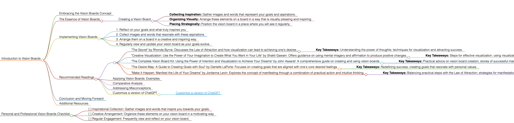

Vision Boards
Introduction to Vision Boards
Embracing the Vision Boards Concept
Vision Boards are a powerful and creative tool used for visualizing and focusing on one's personal and professional goals. They serve as a visual representation of aspirations, helping to manifest dreams into reality.
The Essence of Vision Boards
Vision Boards involve the collection of images, quotes, and symbols that represent the goals and dreams of an individual. They are a source of inspiration and motivation, helping to keep focus on achieving these aspirations.
Creating a Vision Board
- Collecting Inspiration: Gather images and words that represent your goals and aspirations.
- Organizing Visually: Arrange these elements on a board in a way that is visually pleasing and inspiring.
- Placing Strategically: Position the vision board in a place where you will see it regularly.
Implementing Vision Boards
To create an effective vision board, follow these guidelines:
- Reflect on your goals and what truly inspires you.
- Collect images and words that resonate with these aspirations.
- Arrange them on a board in a creative and inspiring way.
- Regularly view and update your vision board as your goals evolve.
Recommended Readings
- "The Secret" by Rhonda Byrne: Discusses the Law of Attraction and how visualization can lead to achieving one's desires.
- Key Takeaways: Understanding the power of thoughts; techniques for visualization and attracting success.
- "Creative Visualization: Use the Power of Your Imagination to Create What You Want in Your Life" by Shakti Gawain: Offers guidance on using mental imagery and affirmation to produce positive changes.
- Key Takeaways: Steps for effective visualization; using visualization for personal growth.
- "The Complete Vision Board Kit: Using the Power of Intention and Visualization to Achieve Your Dreams" by John Assaraf: A comprehensive guide on creating and using vision boards.
- Key Takeaways: Practical advice on vision board creation; stories of successful manifestation.
- "The Desire Map: A Guide to Creating Goals with Soul" by Danielle LaPorte: Focuses on creating goals that are aligned with one's core desired feelings.
- Key Takeaways: Redefining success; creating goals that resonate with personal values.
- "Make It Happen: Manifest the Life of Your Dreams" by Jordanna Levin: Explores the concept of manifesting through a combination of practical action and intuitive thinking.
- Key Takeaways: Balancing practical steps with the Law of Attraction; strategies for manifestation.
Applying Vision Boards: Examples
Use vision boards for various goals such as career advancement, personal development, health and wellness, or creative projects.
Comparative Analysis
Vision boards stand out for their creative and visual approach to goal setting and manifestation.
Addressing Misconceptions
Vision boards are not just about wishful thinking; they combine visualization with actionable planning.
Customize a version of ChatGPT
Conclusion and Moving Forward
By creating and utilizing vision boards, you can maintain focus on your aspirations and motivate yourself towards achieving them. This guide has offered insights into effectively using vision boards as a tool for manifestation and goal achievement.
Additional Resources
For further exploration of visualization techniques and goal manifestation, delve into the recommended literature.
Personal and Professional Vision Boards Checklist
